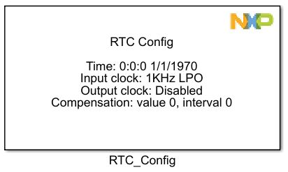
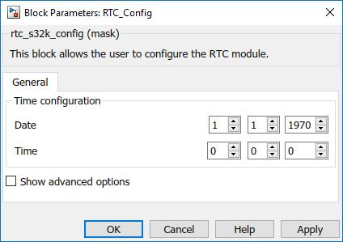
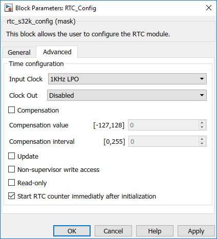

RTC Configuration Block
This block allows the user to configure the LPTMR module.
The Real Time Clock Module is an independent timer that keeps track of the exact date and time with no software overhead and low power usage.
Block Image
Inputs:
- None
Outputs:
- None
Parameters and Dialog Box
The block dialog consists of the following tabs:
General
Time configuration
Sets the initial time for the RTC counter.
- Date - format dd/mm/yyyy
- Time - format hh:mm:ss
Show advanced options
Shows or hides the Advanced options tab.
Advanced
Input Clock
RTC Clock Select
- 32KHz crystal
- 1KHz LPO
Clock output
RTC Clock Out Source
- Disabled
- Prescaler output
- 32KHz clock
Compensation
When unchecked, the selected prescaler clock in Time Counter mode or selected input source in Pulse Counter mode directly clocks the counter. When checked, the counter is clocked by the output of the prescaler/glitch filter.
Compensation value [-127,128]
This field represents the current value used by the compensation logic for the present second interval.
Compensation interval [1,255]
This field configures the compensation interval in seconds from 1 to 256 to control how frequently the TCR should adjust the number of 32.768 kHz cycles in each second. The value written should be one less than the number of seconds.
Non-supervisor write access
When set this checkbox writes to the registers in non Supervisor Mode
Read-only
Enable changing the Time Counter Enable bit even if the Status register is locked
Start RTC counter immediatly after initialization
When unchecked, the timer counter is not enabled after initialization done. It can be enabled using the RTC_Counter_Start_Stop. When checked the counter is started immediatly after initialization done.
Default value is checked, even if the advanced configuration is unavailable.
Block Dependency
- None
Block Miscellaneous Details
- None